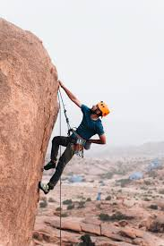

At the end of the day though, climbing can be enjoyed however you want, and if you're being safe and not destroying routes, it doesn't matter how your doing it. Even if your not being safe and want to free solo, you can do that too. That's the great part about climbing, it's meant to be freeing, and the community behind it sees that, so doing it your own way is encouraged.

If you want to get into climbing even a little bit, do it, and don't be intimidated by not knowing what to do. You can learn concepts one at a time, and they are all simple, there is just a lot sometimes. In the end though, it's totally worth it.
Every single picture in this website, besides the two that are above in the box were taken and provided by me. This one is my favorite, and I haven't shown the whole thing in this website yet so I thought I'd paste it here